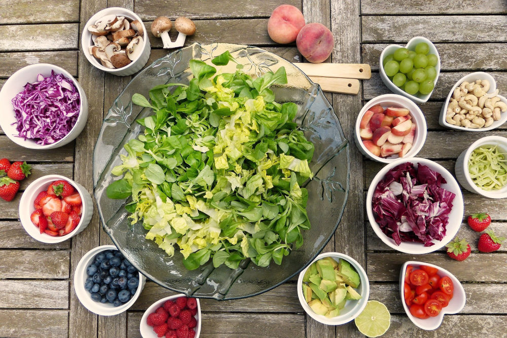

Siguiendo una alimentación sana y variada: os que consumen más frutas y verduras tienen índices de mortalidad de hasta el 30% menos que los que consumen pocas.

Practicando ejercicio físico cada día: El ejercicio físico es un factor protector de algunos cánceres como el de colon.
Vacunándonos: Y vacunando a nuestros hijos. Es muy importante estar al día de las vacunas que nos toquen.
Evitando el tabaco: Es más que conocido que fumar da lugar a muchos cánceres y otras enfermedades. Entonces ¿por qué seguimos practicando un hábito tan perjudicial? Una vez se empieza cuesta mucho salir de ahí debido a que la nicotina es muy adictiva.